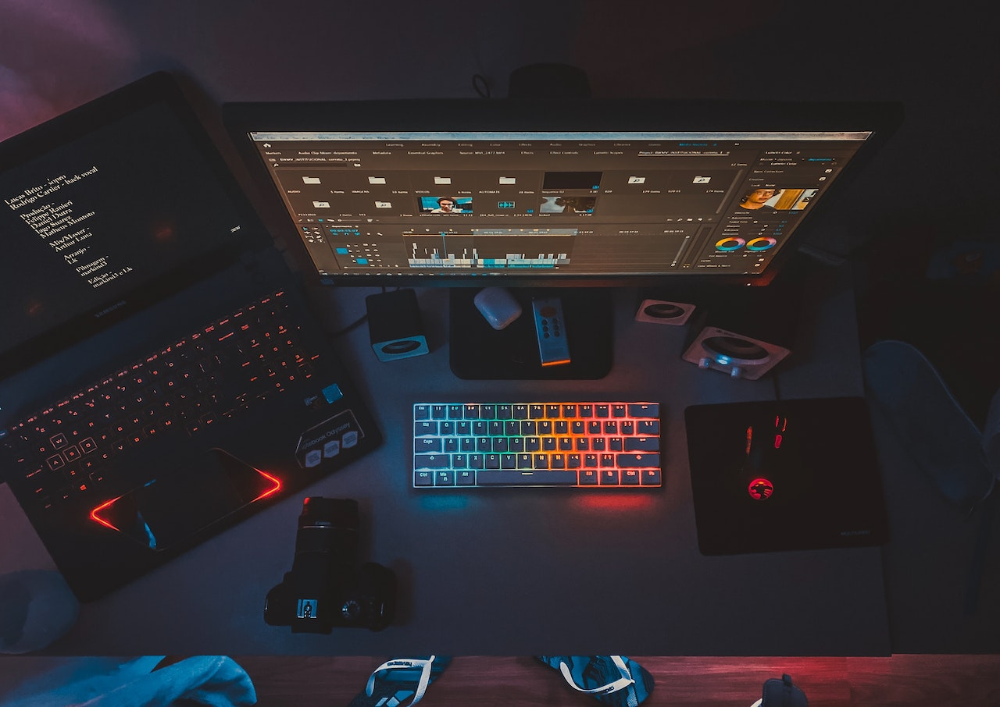
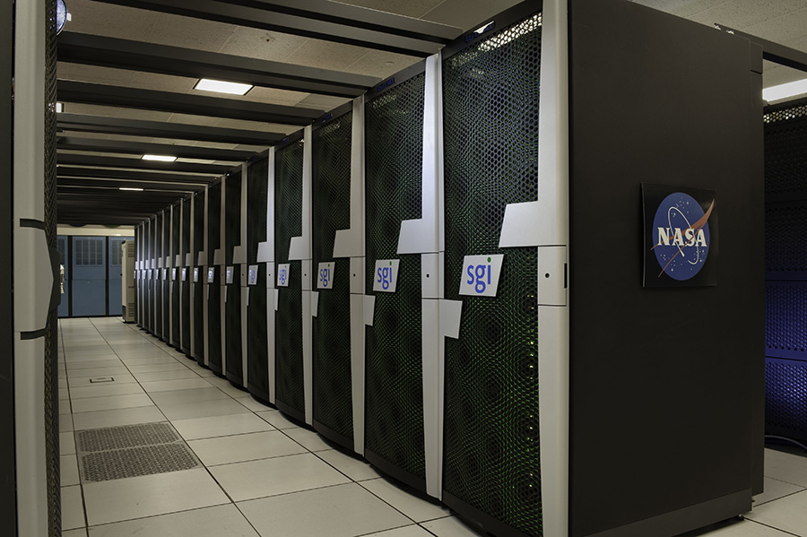
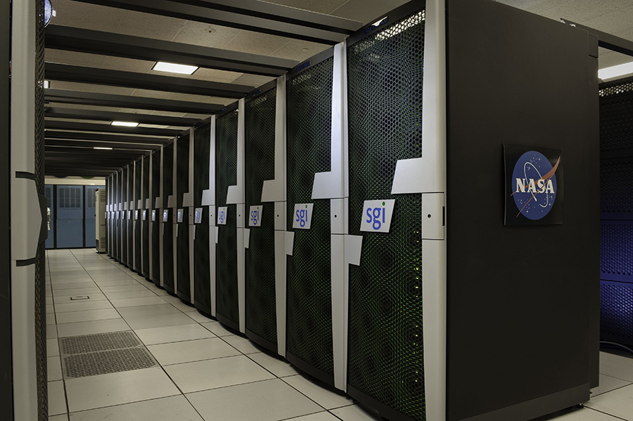

Computing power can be defined as the speed and efficiency with which a
computer can perform a task. The faster a computer can perform a task,
the more powerful it is said to be. The more powerful a computer is, the
more it can do. This is why computers are becoming more and more
powerful over time.
One way to measure computing power is by the number of floating-point
operations per second (FLOPS). This is a measure of the ability of a
computer to perform mathematical operations. The more FLOPS a computer
has, the more powerful it is.
Computing power has already established its place in the digital era,
with almost every device and appliance being computerized. However,
there are still many people who are unaware of the true power that
computing can have. In this article, we will explore the concept of
computing power and its implications for the modern world.
One of the most important things that computing power can do is process
information. This is the bread and butter of computing. Computers can
take in vast amounts of information and sift through it to find the
relevant bits. This is what allows us to do things like search the
internet and find the information we need.

Another important thing that computing power can do is store information.
This is what allows us to have things like computers in the first place.
Without the ability to store information, computers would be nothing more
than very fast calculators.Advances in computing power have revolutionized
the way we live and work. By harnessing the power of computers, we've been
able to solve complex problems, make new discoveries, and create amazing
new technology.
Computing power is also helping us to understand the Universe better. By
using computers to simulate the Universe, we can test theories and make
predictions about how the Universe works. And as our computing power
continues to increase, we'll be able to explore the Universe in even
greater detail. Watch this video to learn how the computers were
developed.
 
